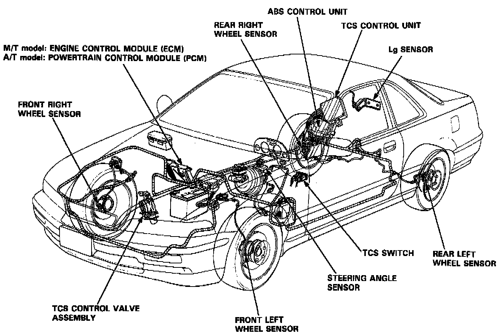

Outline
DESCRIPTION AND OPERATIONThe traction control is a variable system designed to enhance traction during acceleration and cornering. It does so by determining the optimum amount of wheel spin for any given driving situation, then suppressing surplus engine power accordingly.
CONSTRUCTION AND FUNCTION
The TCS control unit gets signals about the vehicle's speed, direction and road conditions from the wheel sensors, steering angle sensor and lateral acceleration (Lg) sensor. Based on these signals, the control unit will determine the optimum amount of wheel spin. Because the system is variable, the control unit may determine, depending on the driving conditions, that some wheel spin is beneficial (thus enhancing straight-line acceleration), or that no wheel spin is beneficial (thus enhancing cornering). For any given driving situation, the control unit will determine the amount of wheel spin best suited to the driver's needs and, if necessary, will then signal the TCS control valve actuator, and Engine Control Module (ECM) for M/T or Powertrain Control Module (PCM) for A/T to reduce engine power.
The system is automatically "ready" whenever the engine is started, but can be manually canceled with the TCS switch. However, once activated, the system cannot be canceled until it is once again in the ready state.

Components:
- Wheel sensors: The TCS "shares" the wheel sensors with the anti-lock brake system (ABS). The wheel sensors transmit the wheel speed signals to the TCS control unit through the ABS control unit.
- Steering angle sensor: The steering angle sensor signals the TCS control unit about the amount of steering angle.
- Lg sensor: The Lg sensor detects the lateral acceleration of the vehicle and signals the TCS control unit.
- TCS control valve actuator: The actuator gets signals from the TCS control unit and closes the TCS control valve accordingly.
- TCS control unit: The control unit gets driving condition signals from the sensors and, if necessary, signals the TCS control valve actuator to close the TCS control valve, and the ECM or PCM to cut the fuel and retard the ignition timing.